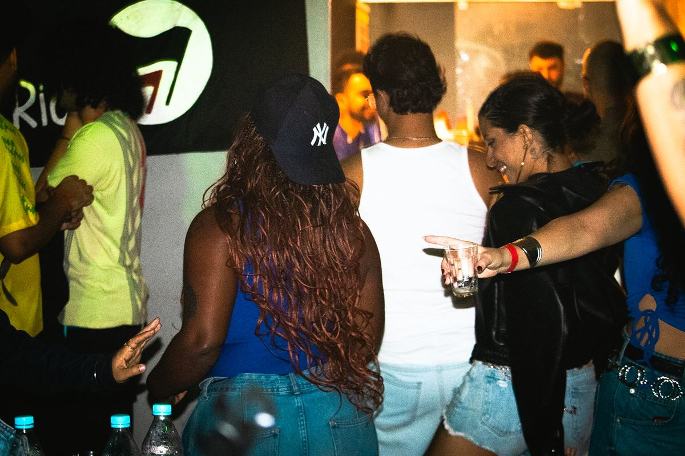
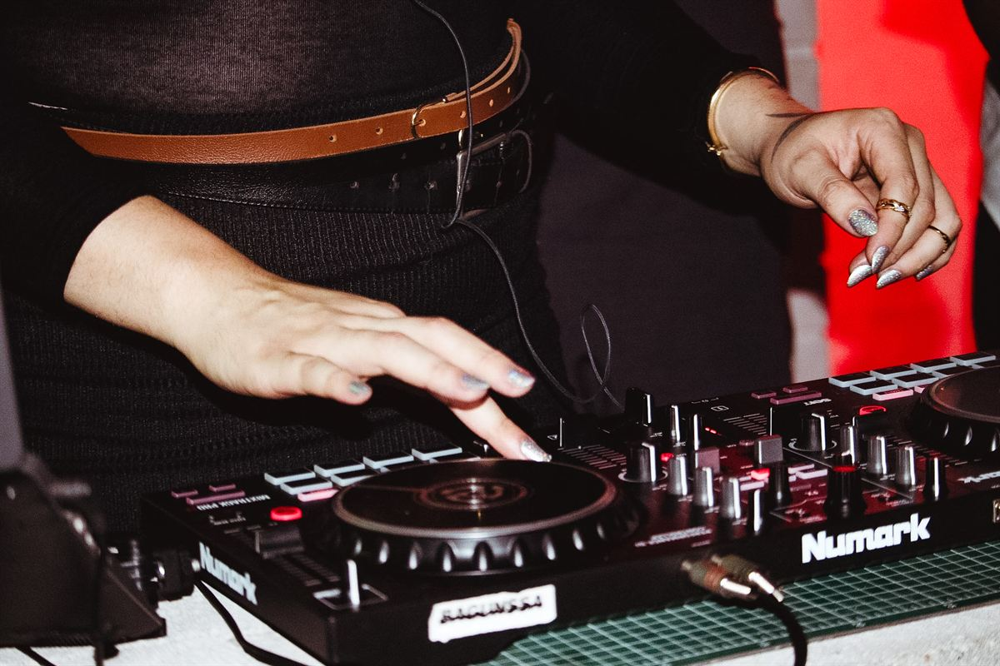
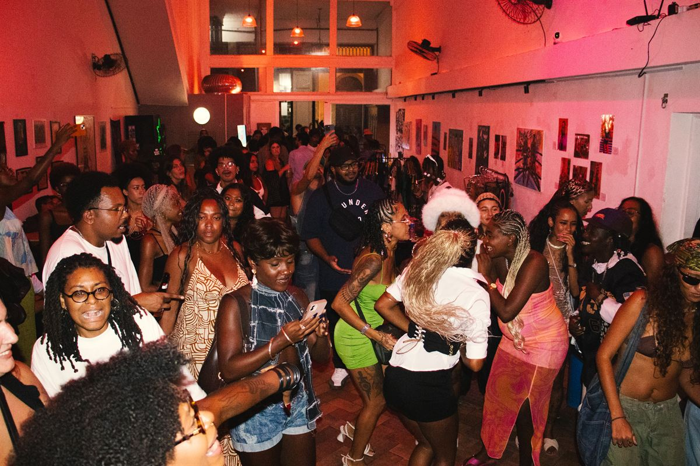
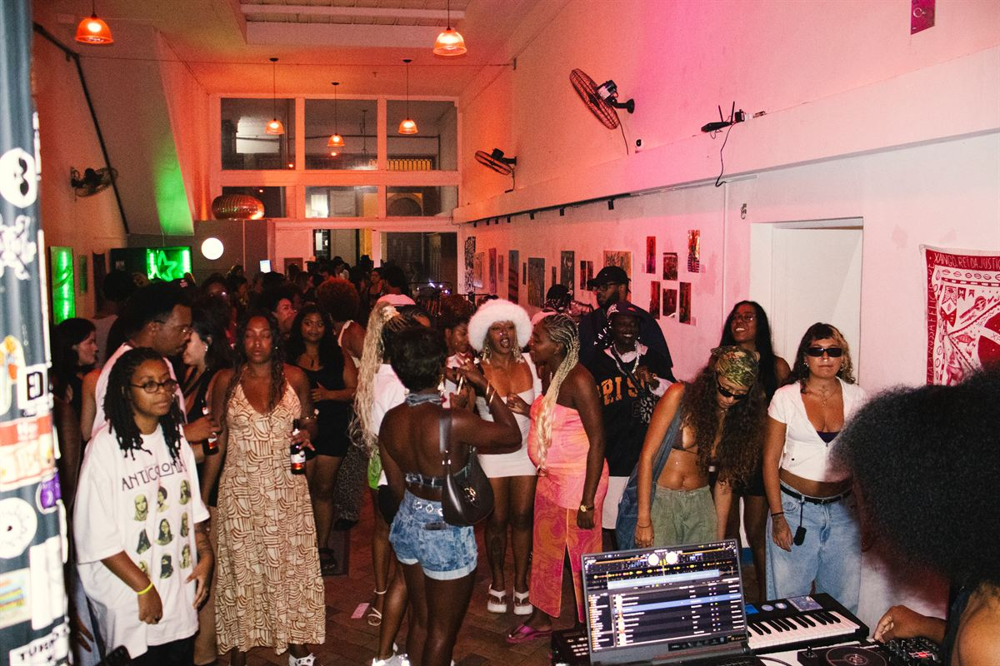
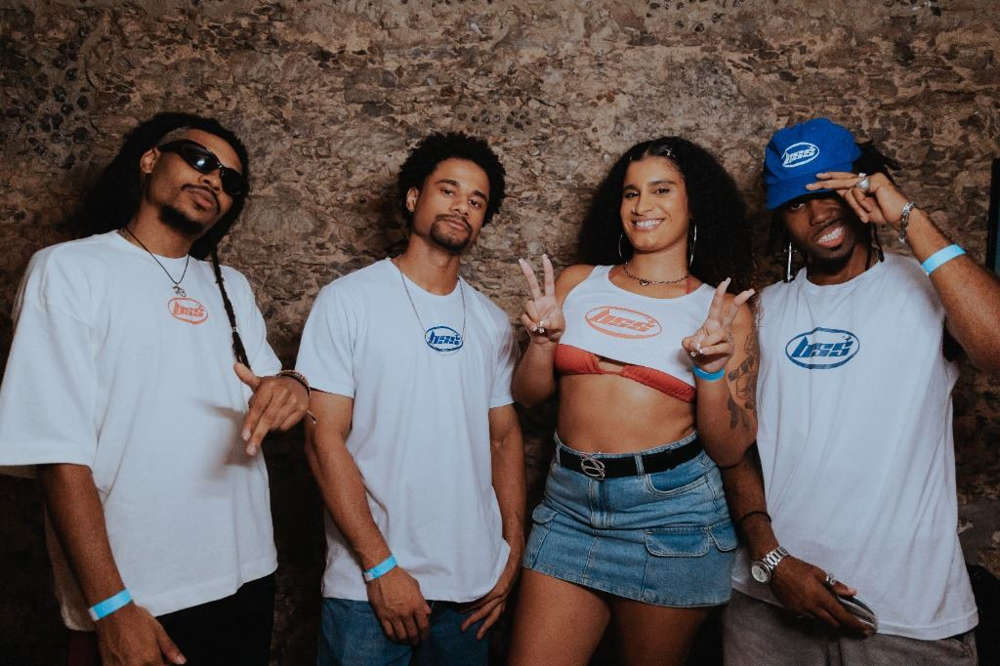

CRIAR ESPAÇO AO INVÉS DE PEDIR
O BAGUNSESSION nasce da rua, do Home Studio e da urgência de criar espaço para mostrar arte de qualidade. Sem esperar convite de circuito fechado.
“A regra é simples: avisa pra geral, fica à vontade e repara na bagunssa.”

CENA REAL


Mais do que uma sequência de apresentações, o BSS é uma desordem organizada entre artistas, cantores, DJs e público. Cada edição vira uma memória sonora.
Palco Autoral
Curadoria focada em artistas com identidade própria e presença de palco.
Iniciativa Independente
Evento feito por artistas para artistas.
Comunidade
Público colado no palco, conexão real pós-show e rede que fortalece toda a cena.
EQUIPE DA BAGUNSSA
Por trás de cada edição do BAGUNSESSION existe uma equipe independente cuidando da curadoria, direção criativa, produção de palco, som e comunicação — tudo feito na raça e com identidade própria.
“Evento independente feito por quem vive a cena de perto.”

CREW // BSS